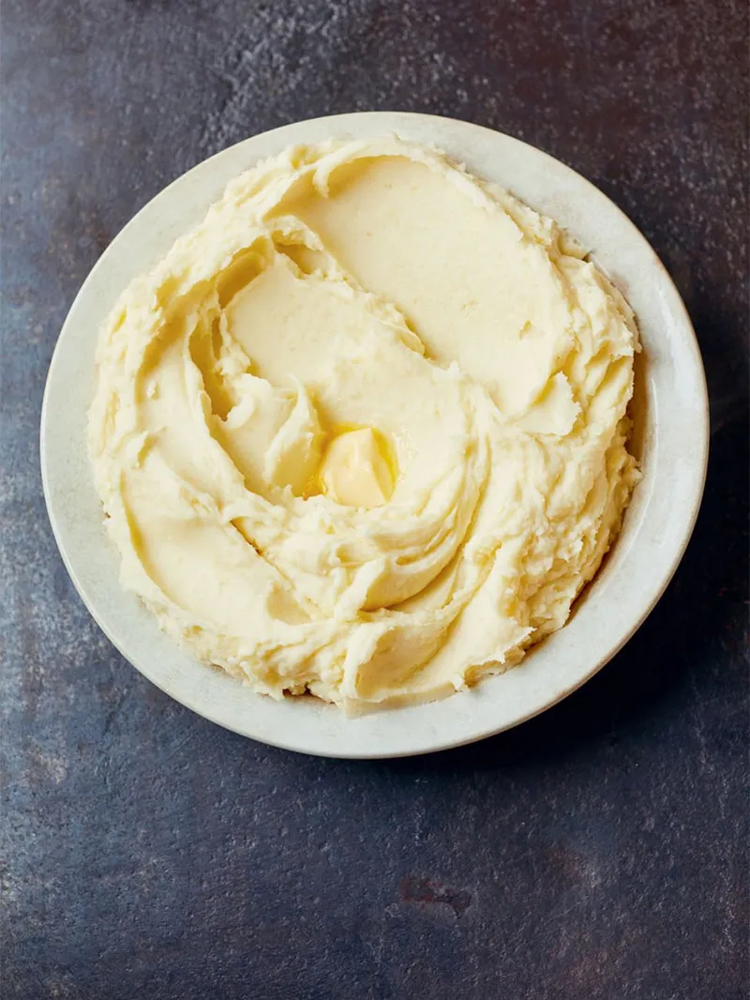

Mashed Potatoes Recipe

Comforting mash
CELERIAC & POTATO
Indulge yourself in a creamy dish of mashed potatoes.This dish is very is to make
and the steps are easy to follow.This dish has very little Ingridients and is very quick to make.
Ingridients
- 1.5 kg potatoes
- 1 celeriac , (800g)
- 25 g unsalted butter
- 2 tablespoons semi-skimmed milk
Steps/Method
- This recipe works great as a stand-alone dish, but also as a component in Jamie’s Christmas Party from Together.
- ON THE DAY Peel the potatoes and celeriac, chop into even-sized chunks and place in a large pan of salted water, ready to cook.
- TO SERVE Bring the water to the boil and cook for 15 minutes, or until soft. Drain and leave to steam dry for 2 minutes, then return to the pan and mash well. Stir in the butter and milk, then season to perfection, tasting and tweaking. Once made, you can put the mash in a heatproof bowl, cover with tin foil and place over a pan of gently simmering water to keep warm, until needed.
Return To Main